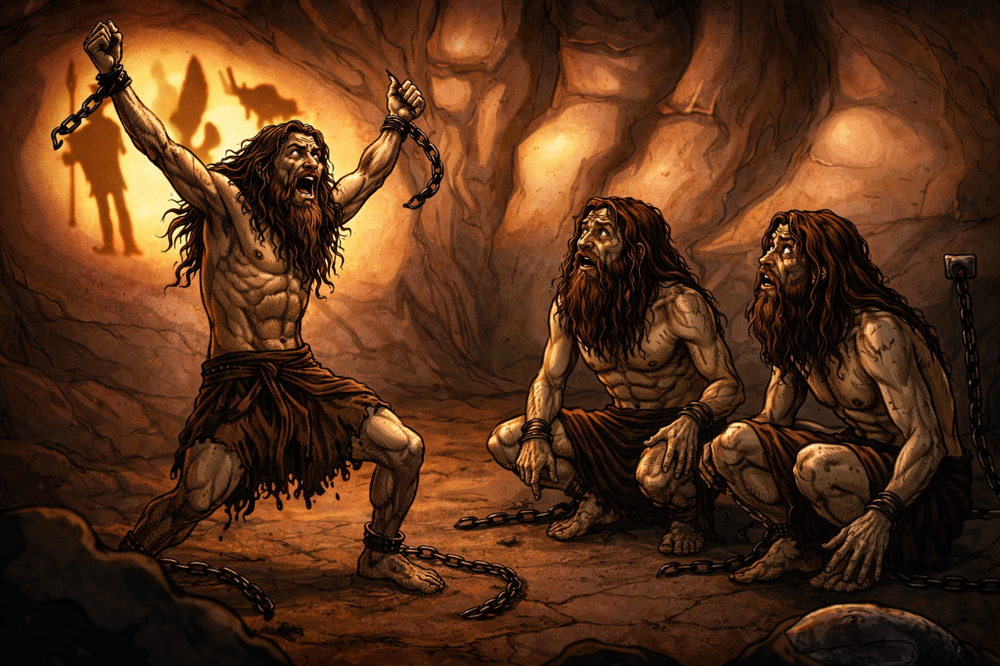

De una vez por todas, decides liberarte de las cadenas, pero al hacerlo, un gran miedo se apodera de ti, el cual te hace dudar de tu decisión y te hace cuestionar si es mejor quedarte en la cueva o salir al exterior. Los demás solo te observan con asombro, pero sin entender el por qué de tu decisión.
Imagen generada a partir de la principal con ChatGPT 5.2 Instant
Un gran miedo se apodera de ti y decides quedarte en la cueva...